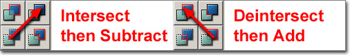
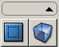
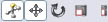
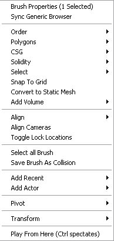
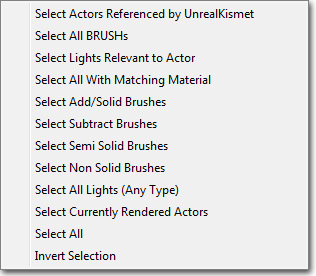

UDN
Search public documentation:
UsingBspBrushesCH
English Translation
日本語訳
한국어
Interested in the Unreal Engine?
Visit the Unreal Technology site.
Looking for jobs and company info?
Check out the Epic games site.
Questions about support via UDN?
Contact the UDN Staff
日本語訳
한국어
Interested in the Unreal Engine?
Visit the Unreal Technology site.
Looking for jobs and company info?
Check out the Epic games site.
Questions about support via UDN?
Contact the UDN Staff
使用 BSP 画刷
概述
BSP 画刷的用途
阻挡关卡
开发关卡的标准的工作流程是这样的：- 设计出关卡草图及关卡路径。
- 运行关卡测试流程和游戏性。
- 修改布局并重新测试
- 第一遍布局网格物体
- 第一遍布局光照
- 运行关卡测试碰撞及性能问题。
- 润色。
体积
体积是可以定义特定空间的不可视几何体，通常在玩家位于体积指定的区域内部时启用一些特殊功能。体积区域由 BSP 画刷进行定义。它会使设计师轻松地制作出局限于给定地图部分的效果，例如，适合游泳的区域、碰撞、触发器甚至是修改后期特效。 要了解有关体积的更多信息，请参阅使用体积页面。简单的过滤几何体
通常，在关卡设计师制作他们的关卡过程中，他们会突然想出一个情形，其中他们需要一个非常简单的一块几何体来填充空隙或空间。如果没有静态网格物体填充空间，不需要麻烦美术组负责创建一个自定义网格物体，设计师只需使用 BSP 就可以填充这个空间。尽管静态网格物体在性能方面更好，但是只要几何体简单在不会造成任何严重影响的情况下可以偶尔使用 BSP。画刷类型

构建画刷
构建画刷实际上是一个模板，可以对其进行修改，然后用于创建任何其他画刷类型。可以在主要编辑器工具框中使用变换工具修改这个画刷、使用 Geometry Mode（几何体模式）或使用 Primitive（图元）对这个画刷进行修改。构建画刷还可以通过使用关联菜单中的 Polygons（多边形） > To Brush（到画刷） 选项采用任何其他现有画刷格式。叠加型动画
添加型画刷就像实体填充的空间。它是您将会作为您想要添加到关卡中的 BSP 几何体的类型。可视化添加型画刷的好方法是想象房间的四面墙壁、地面和屋顶。其中每部分在您的地图中都会是一个单独的类似于盒子形状的添加型画刷，将它们的角互相匹配构成一个封闭的空间。添加型
挖空型画刷是空心挤出来的空间。它是您可以用于删除实心空间的画刷类型，例如通过之前创建的添加型画刷制作门窗等等。挖空型空间是玩家唯一可以在其内部自由到处移动的区域。使用 BSP
添加型 vs 挖空型
添加型和挖空型画刷的概念已经在上面进行解释。这些概念还可以沿用到整个关卡。您在一个空白关卡中开始的默认世界空间就像是一个巨大挖空的空间，或者是一个空白的空间，您可以在其中添加几何体构建您的世界。只是为了便于理解，将它称之为添加型关卡。注意，在之前的虚幻引擎版本中，默认的世界一般都是您可以从中挖出空间的实体空间。现在已经不再是那样了。 可以从添加型或实体空间这样的世界开始，它们被称为添加型关卡，然后将其从您的关卡挖出，但是使用这种方法需要注意一些事项，而且它实质上只是使用大型添加型画刷填充了空白世界。通常情况下，最好以 Additive（添加型）关卡形式开始。拖拽网格
在使用 BSP 时，可以用于对齐世界中的对象的拖拽网格非常重要。如果画刷的边或角没有固定在网格上，那么可能会出现错误，引发渲染失真或其他问题。在使用画刷的时候，您应该始终确保启用了拖拽网格，并且确保您可以使画刷的顶点总是在这个网格上。Brush Order（画刷顺序）
画刷放置的顺序非常重要，因为要根据这个顺序执行添加型或挖空型操作。放置一个挖空型画刷然后再放置一个添加型画刷的效果与放置一个添加型画刷然后再放置挖空型画刷的效果会有所不同，即使他们的位置完全相同。如果您从空白空间挖空然后添加到这个空白空间的顶部，那么实际上会忽略这个挖空型画刷，因为您无法进行挖空操作。但是，如果您以相反的顺序放置相同的画刷，那么您会添加到空白空间，然后从添加回转式空间中将其挖出。 有时您可能会不按照顺序放置画刷或想要在现有画刷前面添加一个需要进行计算的新画刷。幸运的是，画刷的顺序可以按照您稍后将会在画刷属性部分中看到的顺序进行修改。画刷固体性
 按钮指定的硬度进行创建。点击这个按钮可以打开以下对话框：
按钮指定的硬度进行创建。点击这个按钮可以打开以下对话框：
 下面介绍了三种类型硬度。
下面介绍了三种类型硬度。
固体
固体画刷是画刷的默认类型。这些是您在创建一个新的添加型或挖空型画刷时得到的画刷。它们具有以下属性：- 阻挡游戏中的玩家和射弹。
- 可以是添加型或挖空型。
- 在周围画刷中创建 BSP 分割。
半固体
半固体画刷是可以防止在关卡中的碰撞画刷，不需要对周围的世界几何体创建 BSP 分割。可以使用它们创建诸如柱子和支撑柱这样的东西，虽然此类对象通常应该通过使用静态网格物体进行创建。它们具有以下属性：- 阻挡玩家和设当，就像 Solid（固体）画刷一样。
- 只可以是添加型，绝对不可以是挖空型。
- 不要在周围画刷中创建 BSP 分割。
非固体
非固体画刷是也可以在周围世界几何体中创建 BSP 分割的非碰撞画刷。它们具有可视化的效果，但是使用任何方式都无法相互作用。它们具有以下属性：- 不会阻挡玩家或射弹。
- 只可以是添加型，绝对不可以是挖空型。
- 不要在周围画刷中创建 BSP 分割。
画刷操作
反交集
反交集工具可以删除当前位于实体几何体的构建画刷的所有部分，例如，一个添加型画刷，只留下在实体空间外的画刷部分。现有几何体不会受到任何影响。这只是一个在构建画刷上执行的操作，为创建一个添加型画刷做准备。交集
交集工具可以删除当前不在实体几何体内的构建画刷的所有部分，例如，一个添加型画刷，只留下在实体空间内的画刷部分。现有几何体不会受到任何影响。这只是一个在构建画刷上执行的操作，为创建一个挖空型画刷做准备。创建 BSP 画刷
 您可以通过选中您的图元创建 BSP 画刷，右击那个按钮并在弹出的窗口中输入值来设置其大小。
然后使用 CSG 按钮来添加
您可以通过选中您的图元创建 BSP 画刷，右击那个按钮并在弹出的窗口中输入值来设置其大小。
然后使用 CSG 按钮来添加  或挖空
或挖空  那个画刷几何体。当在一个已经存在的几何体上进行挖空或添加操作时一定要小心。为了确保安全，您通常应该在进行挖空操作前进行 取交集 操作，在进行添加操作前进行 反交集 操作。这将可以确保您不拥有重叠的 BSP 几何体来使得引擎混乱。
那个画刷几何体。当在一个已经存在的几何体上进行挖空或添加操作时一定要小心。为了确保安全，您通常应该在进行挖空操作前进行 取交集 操作，在进行添加操作前进行 反交集 操作。这将可以确保您不拥有重叠的 BSP 几何体来使得引擎混乱。


同时请注意您可以从画刷文件菜单中获得关于这些画刷的大多数工能。
修改 BSP 画刷
几何体模式
最好的方式是使用几何体模式来改变画刷的实际形状。编辑器模式可以直接控制画刷的顶点、边和面。它与非常简单的 3D 建模应用程序中的工作方式极为相似。 要了解有关 Geometry Mode（几何体模式）以及如何使用它修改画刷的信息，请参阅几何体模式入门指南页面。变换窗体控件
还可以使用各种不同的编辑器变换窗体控件修改您的画刷。这些允许交互进行平移、旋转和缩放，可以通过主工具栏中的窗体控件按钮访问：
要了解有关 Transform（变换）窗体控件以及使用它们的方式的信息，请参阅变换 Actor。图元
图元可以用于改变构建画刷的形状，其中这个画刷使用的是预定义还可以配置的图元形状，例如，立方体、圆柱体和圆锥体等等。有关可用图元以及如何使用它们的信息，请参阅主要编辑器工具箱页面。画刷属性
可以通过选择画刷然后在视窗中右击访问关联菜单对现有画刷进行编辑。注意，右击菜单总是可以访问的，并且是情境相关的，它根据您当前在编辑器选择的东西显示不同的选项。
Select（选择）
根据从以下菜单中选择的选项进行选择：
Transform（变换）
将当前选中的画刷与网格或表面对齐，同时提供镜像选项。 注意： 如果画刷在尽可能大的网格上，那么有许多 BSP 画刷组成的地图将可以更高效地运行。Pivot（支点）
允许临时设置与所进行的变换相关的支点。Order（顺序）
改变画刷的描画顺序。如果由于某些原因导致您的画刷按照错误的顺序进行了挖空和添加操作时，这个功能是有用的。比如，在您把一个挖空型画刷移动到一个比它后添加的一个添加型画刷的内部的情况中。结果将是您不能看到挖空出的东西。所以在这种情况下，您应该点击 order（顺序）->last on the subtract（最后描画挖空画刷），将会使得挖空型画刷最后描画，从而使得挖空操作在您的关卡中可见。Polygons（多边形）
- To Brush - 使构建画刷和您已经选中的画刷形状相同。
- From Brush - 使您选中的画刷和构建画刷形状相同。
- Merge - 将画刷面的多个多边形融合得尽可能少。这些面必须是共面的，并且这些面必须具有同样的贴图和排列方式。
- Separate - 与融合行为相反的操作。
CSG
- Additive（添加型） - 将画刷转换为添加型画刷。
- Subtractive（挖空型） - 将画刷转换为挖空型画刷。
Solidity（固体性）
您可以把一个画刷从固体转换为半固体或非固体状态。既然虚幻技术游戏中到处都是静态网格物体，所以半固体基本上是被废弃的。然而，它们在项目初期用于避免由BSP画刷几何体组成的原型地图中的BSP洞仍然很有用。添加体积
在选中构建画刷后可用，这个菜单会提供 Add Volume（添加体积）按钮的备选，使用当前构建画刷创建一个新体积。转换
- Convert To Static Mesh - 该选项允许用户把当前选中的画刷转换为静态网格物体。简单地选择您想转换的所有画刷，右击它们（如果您右击一个顶点，那么那个顶点将是产生的网格物体的原点！！），选择这个选项，然后为这个新网格物体分配一个包、组（可选项）并赋予为它命名。然后您便可以在通用浏览器中打开那个包，选择新的网格物体然后通过使用右击菜单把它放置在关卡中。
- Convert To Blocking Volume - 该选项会将选中的画刷转换为新的 BlockingVolume，替换现有画刷。
- Convert To ProcBuilding - 该选项会将选中的画刷转换为新 ProcBuilding 体积，通过使用删除或保留现有 BSP 画刷选项。
- Convert To Volume - 该选项会将选中的画刷转换为选中类型的体积，替换现有画刷。